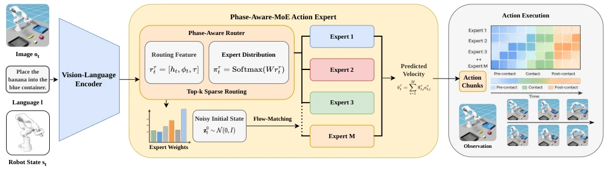

This paper performs a 'precise triage' on Flow-Matching VLA models, replacing the original 'one-size-fits-all' single expert with a 'tailored' MoE architecture. The core logic of PAMAE is clear: robot tasks are divided into stages, with different 'feelings' in different stages; do not expect a single set of parameters to handle everything. This strategy indeed works, boosting success rates by 9.2% in simulation, proving that 'specialization' in robot control is not mere chicken soup. However, the authors define 'stages' somewhat roughly, relying entirely on gripper and end-effector position thresholds for hard cuts; encountering complex tasks might cause 'stage recognition' to fail. Moreover, it currently only runs in simulation, and whether it can withstand noise and latency on real hardware remains a question mark. Overall, it is a clever engineering improvement, but do not expect it to directly solve all hallucination problems in long-horizon planning.
Existing Flow-Matching VLA models (such as π0 [12], π0.5 [13]) possess powerful multimodal grounding and generalization capabilities, yet exhibit fatal shortcomings when handling multi-stage manipulator operations: they typically rely on a single shared Action Expert to predict control signals for all stages. This design overlooks significant differences in control modes, dynamic characteristics, and accuracy requirements across different execution stages (such as approach, contact, manipulation), resulting in the blurring of behavioral characteristics specific to certain stages and reducing the policy's responsiveness to stage-dependent control requirements [14], [15]. Additionally, existing MoE methods are mostly designed around task semantics or robot embodiment differences, lacking explicit utilization of execution stage structures in low-level action generation [16]-[19]. This results in that even with expert mixing introduced, expert allocation is difficult to align with stage-specific action structures, limiting the success rate of long-horizon, contact-rich tasks.
PAMAE proposes a plug-and-play phase-aware Mixture of Experts (MoE) action module, aiming to enhance the reliability of pre-trained Flow-Matching VLA policies. In the overall workflow, it retains the pre-trained VLA backbone network, replacing only the original single shared action expert with a sparse expert mixture, and coordinates it via a Phase-Aware Router. During the inference phase, the router utilizes multimodal context, lightweight trajectory signals (such as gripper status, action amplitude) and flow time steps to dynamically predict sparse expert weights, aggregating output velocity fields to generate action chunks. Training adopts a two-stage optimization strategy: the first stage uses only standard Flow-Matching loss to warm up the experts, preventing routing from collapsing too early; the second stage introduces phase-supervised routing objectives, including phase prediction head loss (L_phase), routing alignment loss (L_route), and smoothing loss (L_smooth), guiding experts to specialize according to execution stages (pre-contact, contact/manipulation, post-contact). Notably, no explicit phase labels are required during inference, as the router can autonomously complete phase-aware allocation.
The authors evaluated PAMAE on five multi-stage operation simulation tasks (such as desktop cleaning, drawer cycling, opening lids, etc.). Baselines include strong models such as π0, π0.5, and ProgressVLA. Results show that PAMAE improved average success rates by 9.2% and 5.6% on π0 and π0.5 backbones, respectively, significantly outperforming the baselines. Ablation studies indicate that removing the warm-up (-S1) or routing alignment loss (-R) in the two-stage training leads to a significant performance drop, confirming the necessity of phase-supervised routing and phased optimization. Additionally, through dominant expert run length and phase-conditioned dominance purity (PCP) analysis, it is verified that the model can achieve time-coherent routing behavior that is highly consistent with execution stages during inference.
其他图片Other Figures

Fig. 1. Overview of PAMAE during execution. Given the current observation ot, language instruction l, and robot state st, the pretrained vision-language encoder produces the context ht. PAMAE replaces the original action expert with a phase-aware sparse MoE expert: the router constructs rτ t = [ht, ϕt, τ], predicts top-k sparse expert weights, and aggregates expert outputs to produce the velocity prediction ˆvτ t , which is then integrated to generate the action chunk. The expert-usage heatmap illustrates the intended phase-related routing, with different experts dominating in different execution phases.